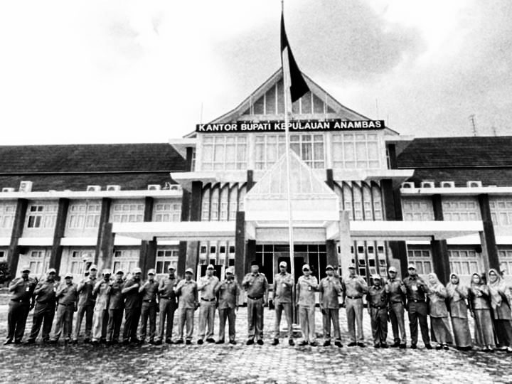
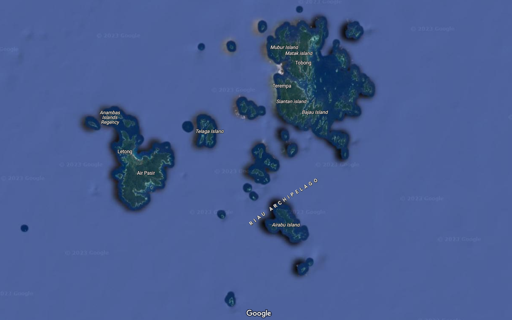
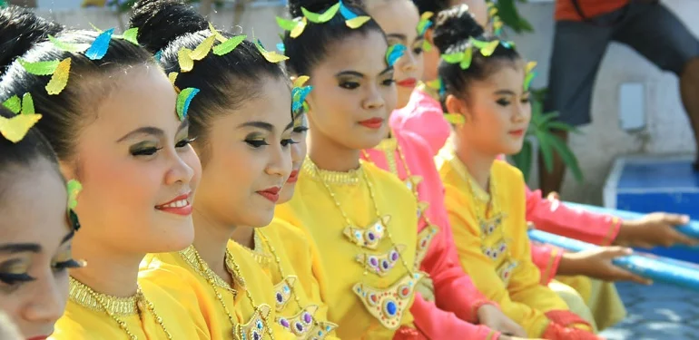

Sejarah

Anambas, sebuah kabupaten di provinsi Kepulauan Riau, Indonesia, telah menjadi pusat perdagangan laut sejak zaman dahulu dengan pengaruh budaya Melayu yang kental, selain itu juga pernah menjadi bagian dari wilayah kekuasaan kolonial Belanda yang terlibat dalam perdagangan rempah-rempah, dan kini dikenal memiliki potensi wisata alam bawah laut yang menarik dengan keindahan pantai berpasir putih, terumbu karang yang indah, serta keanekaragaman hayati laut yang melimpah, sementara pemerintah terus melakukan pembangunan infrastruktur untuk meningkatkan perekonomian dan kesejahteraan masyarakat setempat.
Geografis

Kabupaten Kepulauan Anambas adalah sebuah kabupaten di Provinsi Kepulauan Riau, Indonesia. Ibu kotanya adalah Tarempa. Kabupaten ini terdiri dari 238 pulau, yang terbesar adalah Pulau Siantan. Kabupaten ini memiliki luas wilayah 2.922,35 km² dan berpenduduk 64.000 jiwa. Kabupaten ini terdiri dari 5 kecamatan, yaitu Siantan, Palmatak, Jemaja, Kiabu, dan Tarempa. Kabupaten ini memiliki 238 pulau, yang terbesar adalah Pulau Siantan. Kabupaten ini memiliki luas wilayah 2.922,35 km² dan berpenduduk 64.000 jiwa. Kabupaten ini terdiri dari 5 kecamatan, yaitu Siantan, Palmatak, Jemaja, Kiabu, dan Tarempa.
Budaya

Budaya Anambas merupakan perpaduan dari berbagai pengaruh budaya, terutama Melayu, yang tercermin dalam bahasa, adat istiadat, dan seni budaya, dengan kegiatan tradisional seperti tarian, musik, dan upacara adat yang masih dijaga keasliannya hingga saat ini, serta kehidupan masyarakat yang masih sangat terkait dengan laut dan hasil laut seperti perikanan dan kerajinan tangan berbasis bahan alam.